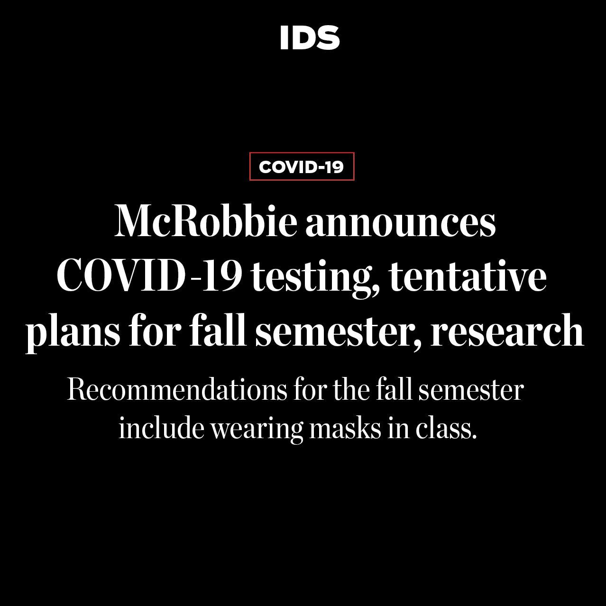

Bil Thorn is a Black farmer in Washington state, running his small independent farm with his wife and children.
After George Floyd's killing, the farm received more than $45,000 in donations from people across the world who want to contribute to a Black-owned business. It's changed their life.
The tornado hit a high of 130 miles per hour in its 3.7 mile path through Monroe County, destroying homes and interrupting lives near Ellettsville, Indiana.
Indiana Collegiate Press Association 1st place Breaking News Reporting Online
Here's how I designed the story for print.
Students within IU's theater department are pushing for a fairer educational experience, protesting against discrimination and on-stage equity.
Indiana Collegiate Press Association 2nd place News Feature Reporting Online
Here's how I designed the story for print.
SND 2020 College Design Contest 3rd place Standalone Multimedia
Social Here are examples of my recent redesign of our Instagram. Click for full-size versions.
